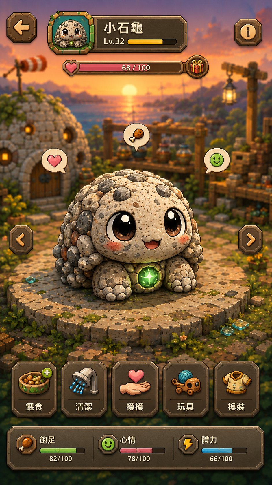
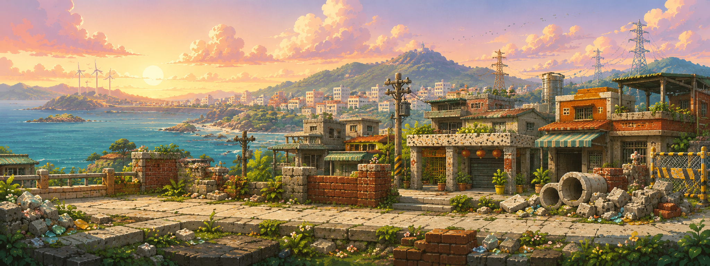
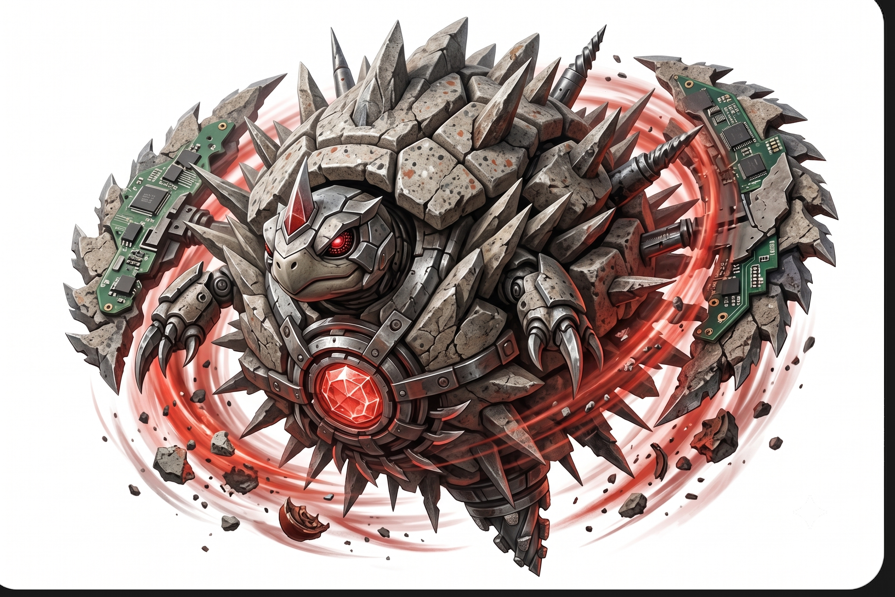
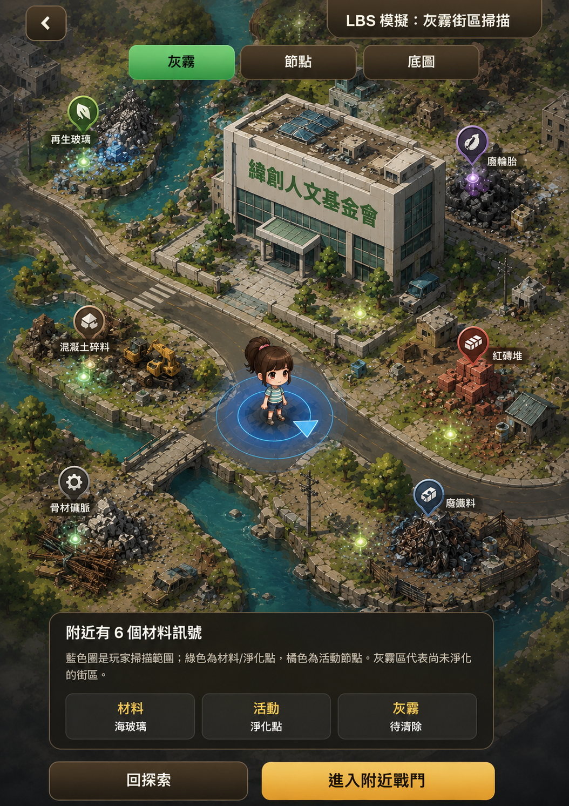

你喜不喜歡獨一無二的台灣守護獸？
角色可以來自地方材料、廟口、產業、童年記憶、地景或生活感，再透過你的採集、照顧與重鑄長出不同個性。
我不想只關在自己的腦袋裡做一個很大的夢。這份問卷會先確認大家對「台灣自己的角色 IP」、「彈射爽感玩法」、「水磨重鑄養成」與「AI 守護獸陪伴」的真實反應。
角色可以來自地方材料、廟口、產業、童年記憶、地景或生活感，再透過你的採集、照顧與重鑄長出不同個性。
我們正在測試拉開、瞄準、放開的彈射無雙採集戰，也想知道玩家是否在意五行、材料重量與角色成長。
如果守護獸能透過水磨、材料重鑄、AI 長期記憶與真實生活行動成長，你會想支持哪一種版本？
目前所有圖像與畫面都還是早期概念。它們的作用不是假裝完成，而是讓大家更容易理解方向、提出意見。
台灣有山、有海、有廟口、有稻田，有紅磚、碎玻璃、蚵殼、黑泥，也有很多平常不會被放進遊戲裡的小故事。
《康加台灣》想把這些地方記憶變成守護獸、關卡、材料、技能與玩家能參與的行動。牠不只是被抽到的角色，而是透過材料採集、水磨、重鑄、照顧與 AI 記憶，慢慢長成屬於你的夥伴。
康加的核心差異，是讓材料不只停留在背景設定。玩家收集紅磚、碎玻璃、蚵殼、黑泥與地方素材後，可以透過水磨、重鑄與照顧，讓同一隻守護獸長出不同紋理、個性與戰鬥傾向。
水磨代表從粗糙到發亮的過程。它可以成為遊戲裡的養成儀式，也呼應李老師真實工藝中把廢料重新磨亮的精神。
你餵牠什麼材料、在哪裡採集、怎麼戰鬥與照顧，都可能影響牠的外觀、詞綴、五行徽章與技能方向。
理想狀態下，每位玩家的守護獸都能留下自己的生活痕跡，像一件被時間養成的材料作品，而不是只換皮的角色卡。

目前的玩法方向是「彈射無雙採集戰」：守護獸在材料戰場中反彈、旋轉、破壞障礙、擊倒小怪，收集紅磚、碎玻璃、黑泥、貝殼與地方素材。
紅磚可以重而穩，碎玻璃可以快而銳，黑泥可以減速控場，貝殼與蚵殼則適合反彈與防禦。
我們希望每隻守護獸都有自己的材料來源、地方感、外型記憶與戰鬥特色，而不是只換顏色或換皮。
問卷會確認大家比較期待爽快打怪、角色收集、五行策略、地方探索，還是實體活動與募資回饋。


我們正在測試一種介於角色、彈珠與陀珠之間的戰鬥形態。牠可以高速碰撞，也要保留臉、核心、材料紋理、地方記憶與玩家照顧痕跡，讓玩家知道那是自己的夥伴。
小石龜、玻璃蛙、紅磚拳仔等角色都應該有不同輪廓，不會只剩一顆普通球。
如果角色成立，未來才有機會延伸到動畫短片、卡牌、實體小物、地方合作與募資回饋。
未來若技術與成本可行，守護獸可以記得你的名字、習慣、心情與照顧方式，成為更懂你的 AI 夥伴。
比起先公開硬體想像，前測階段會先聚焦在玩家更容易理解的核心體驗：用 LBS 地圖掃描附近材料訊號、探索灰霧街區、進入附近戰鬥，讓台灣地方慢慢變成遊戲世界的一部分。
玩家可以在地圖上看見再生玻璃、紅磚堆、骨材礦脈、廢鐵料等材料點，建立探索動機。
尚未淨化的區域會被灰霧覆蓋，玩家需要透過探索、戰鬥與材料收集慢慢清出道路。
不同地點可以長出不同材料、角色與事件，未來能接到地方文化、職人故事與線下活動。
硬體、NFC 與工藝擺件仍是未來可能，但目前不在公開頁面展開，先讓問卷聚焦核心遊戲。

這個計畫有遊戲、角色 IP、水磨重鑄、AI 夥伴、智能家居、減碳行為與地方行動等很多可能；但第一版不會全部都做。問卷就是要幫我們知道哪一條路最值得先走。
未來若條件成熟，守護獸可能接軌 AI 長期記憶，記得你的名字、習慣、喜好與照顧節奏，從角色變成更像陪伴型夥伴的存在。
守護獸未來可能成為桌上的生活入口，連動燈光、提醒、聲音、空氣品質或家中情境，把照顧角色延伸到照顧生活。
如果玩家走路、搭大眾運輸、參與材料募集、使用友善產品或完成地方任務，都能累積善良值，遊戲就不只是消磨時間。
水磨擺件、材料包、NFC 連動與線下工坊仍是未來可能。前測會幫我們判斷它們是否適合進入募資版本。
我過去是職業攝影師，拍過很多作品，也寫過很多影像故事。後來創業失敗、停下很久，現在想用比較踏實的方式，把影像、AI、遊戲、品牌和真實材料重新接起來。
這個計畫也結合了李老師在材料、水磨與工藝上的長期累積。現在它還很早期，所以我希望先透過問卷收集大家的直覺，而不是只靠自己想像。
你不用懂遊戲，也不用懂材料。只要告訴我們：這個方向有沒有吸引你、你是否期待水磨重鑄、AI 守護獸、減碳行為或智能家居連動，哪些地方你覺得還不夠清楚。